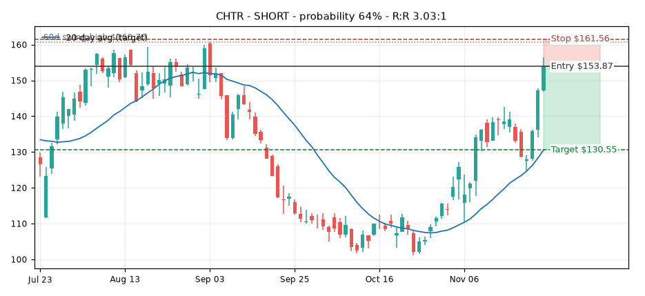
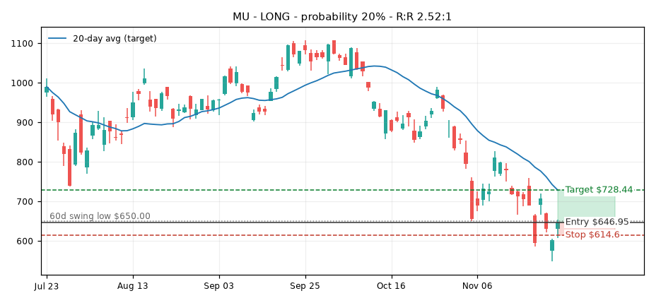
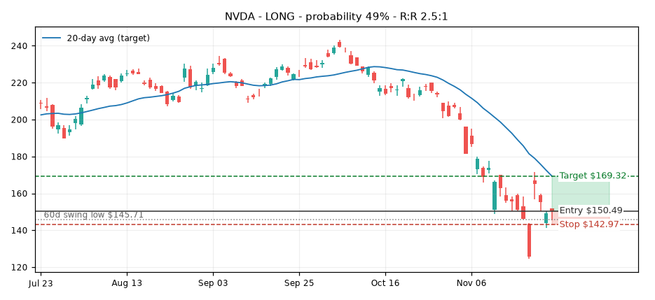
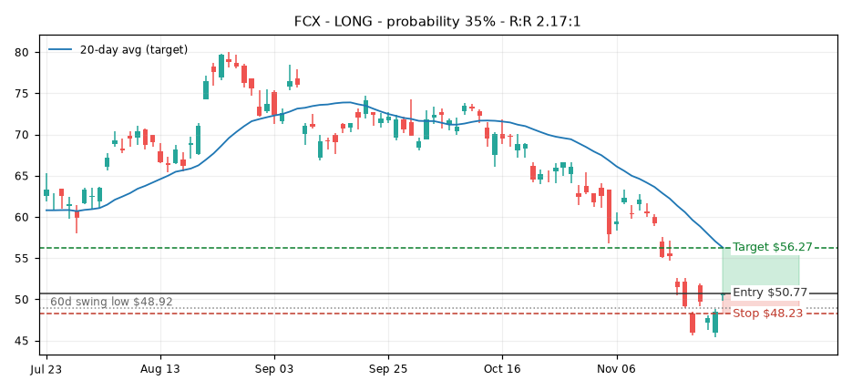
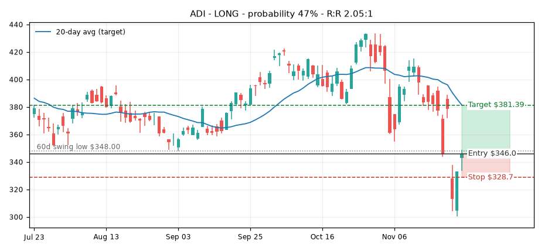
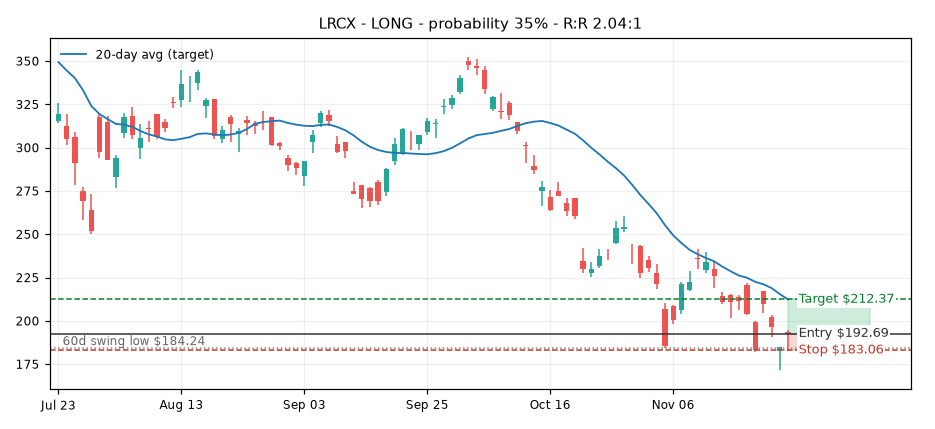

Last updated: 2026-11-27
Live track record: 1245 closed picks, 33% win rate. Average predicted probability 42% vs actual 33% (67 decided). 81 still open. Full track record →
| Ticker | Sector | Dir | Price | RSI(7) | % vs 20D | Volume | Entry | Stop | Target | R:R | Avg Hold | Probability | Hist. win rate | Sample | Earnings |
|---|---|---|---|---|---|---|---|---|---|---|---|---|---|---|---|
| CHTR | Communication Services | SHORT | $153.87 | 78.1 | 17.9% | 0.86x | $153.87 | $161.56 | $130.55 | 3.03:1 | 7.0 | 64% | 71% | 14 | 63d |
| MU | Information Technology | LONG | $646.95 | 42.5 | -11.2% | 0.71x | $646.95 | $614.6 | $728.44 | 2.52:1 | 8.7 | 20% | 50% | 12 | 20d |
| NVDA | Information Technology | LONG | $150.49 | 42.5 | -11.1% | 0.51x | $150.49 | $142.97 | $169.32 | 2.5:1 | 7.8 | 49% | 64% | 14 | 89d |
| FCX | Materials | LONG | $50.77 | 42.0 | -9.8% | 0.55x | $50.77 | $48.23 | $56.27 | 2.17:1 | 7.4 | 35% | 50% | 14 | 55d |
| ADI | Information Technology | LONG | $346.0 | 42.3 | -9.3% | 0.68x | $346.0 | $328.7 | $381.39 | 2.05:1 | 8.6 | 47% | 70% | 10 | 82d |
| LRCX | Information Technology | LONG | $192.69 | 40.7 | -9.3% | 0.51x | $192.69 | $183.06 | $212.37 | 2.04:1 | 5.0 | 35% | 50% | 8 | 61d |
LONG = oversold, expected to bounce back up toward the 20-day average. SHORT = overbought, expected to pull back down toward the 20-day average. Stop-loss = 5% against the position. Probability = this ticker's historical win rate minus penalties when the chart structure is broken (hover for reasons). 🔥 means volume was 1.5x+ the 20-day average. Tickers with earnings due within 3 days are excluded. Macro events pulled live from a public economic calendar feed (high-impact USD events only). Mechanical screen only — check news before acting. Not financial advice.
Probability 71% → 64%: higher highs and higher lows (-7)
Earlier signals on CHTR: 2026-11-25: ❌ hit stop -5.0% 2026-11-17: ❌ hit stop -5.0% 2026-11-10: ❌ hit stop -5.0%

Probability 50% → 20%: broke below 60d swing low (-15); below 200-day avg, downtrend (-8); lower highs and lower lows (-7)
Earlier signals on MU: 2026-11-25: ⏳ still open 2026-11-20: ❌ hit stop -5.0% 2026-11-05: ❌ hit stop -5.0%

Probability 64% → 49%: below 200-day avg, downtrend (-8); lower highs and lower lows (-7)
Earlier signals on NVDA: 2026-11-20: ⏳ still open 2026-11-19: ❌ hit stop -5.0% 2026-11-17: ❌ hit stop -5.0%

Probability 50% → 35%: below 200-day avg, downtrend (-8); lower highs and lower lows (-7)
Earlier signals on FCX: 2026-11-18: ❌ hit stop -6.2% 2026-11-16: ❌ hit stop -5.5% 2026-11-05: ❌ hit stop -5.0%

Probability 70% → 47%: broke below 60d swing low (-15); below 200-day avg, downtrend (-8)
Earlier signals on ADI: 2026-11-24: ⏳ still open 2026-11-20: ❌ hit stop -5.4% 2026-11-06: ✅ hit target +10.4%

Probability 50% → 35%: below 200-day avg, downtrend (-8); lower highs and lower lows (-7)
Earlier signals on LRCX: 2026-11-25: ⏳ still open 2026-11-05: ❌ hit stop -5.0% 2026-11-04: ❌ hit stop -5.6%
